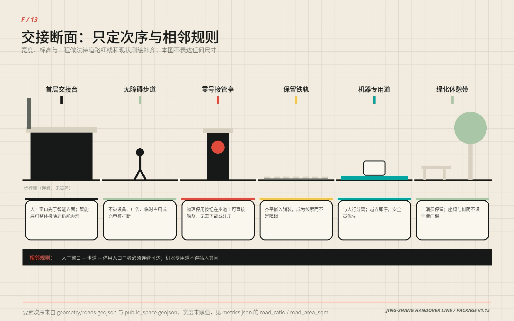
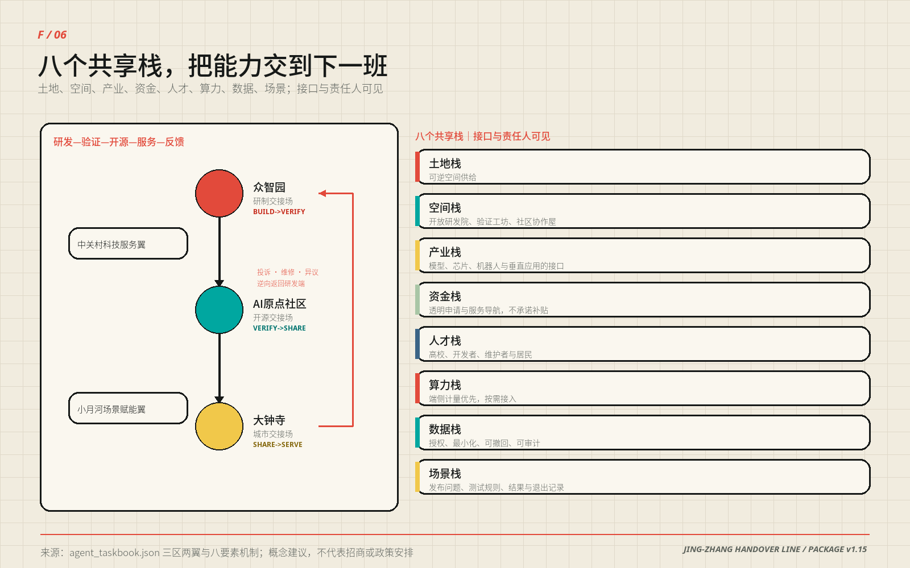

京张交接线：让好 AI 更快进城，让每次交接都有回路
把铁路交接班转译为城市 AI 的上线路径：一条连续交接线串联研制、验证、开源与公共服务，三座交接场承担不同责任，十二个场景均可人工接管并回到基础服务。包内已完成 12/12 场景的离线桌面演练；首个现场试点、角色指派与造价询价仍待授权。
京张交接线 / JING-ZHANG HANDOVER LINE
让好 AI 更快进城，让每次交接都有回路
一条线，把 AI 从实验室送进日常；每一站都有人接得住、退得回、看得懂。
京张铁路最重要的遗产不只是一条线位，也是一套交接制度：上一班必须说明交出了什么，下一班必须独立判断是否接收，未完成事项不能在交班中消失。本方案把这套制度转译为城市 AI 的空间协议。研制把能力交给验证，验证把可复现结果交给开源社区，开源社区把服务交给城市；投诉、维修、失败和停用原因再沿同一条线回到研发端。能力因此可以加速流动，责任始终留有签收人与回程票。
“无 AI 也能办成”仍是公共服务的基础地板，但不再是方案的全部叙事。交接线的积极价值，是让一项已经证明有用的技术更快找到测试空间、责任接口、公共服务载体和可复用记录；一旦条件变化，又能不伤害基础服务地退出。这个机制同时回应创新速度与公共信任，而不是在二者之间二选一 来源 标准。
本轮已经完成一项参与者可控制的实施证据：十二个合成场景逐条跑过“智能层关闭—异常触发—接入方拒收—人工接管—合成记录清零—回到基础服务”的离线状态机，12/12 任务成功、48/48 断言通过。它证明协议能够被执行和审计，但不冒充现场安全、公众测试或上线批准；现场演练仍是 0/12 指标 指标 指标。

读图只需三步。 先看 12/12 与 48/48，确认本轮真正完成了什么；再看公开交接桌的六类构件、六类责任主体和 S 级成本公式，理解授权后怎样做第一个现场试点；最后看“现场 0/12”，确认数字演练没有被包装成建成或运营事实。
| 评审要问的事 | 本方案的回答 | 当前证据状态 |
|---|---|---|
| 核心概念是否原创 | 把铁路双联交班变成“BUILD→VERIFY→SHARE→SERVE→RETURN”的城市 AI 空间协议 | 空间、角色、场景和回滚均有同一套编号 |
| 空间是否明确 | 一条交接线、三座交接场、两翼支撑、八条东西缝合支线、二十个更新类型单元 | GeoJSON 与五张核心图可复算、可定位 |
| 是否可实施 | 先做一张无固定土建的公开交接桌，再做三座交接场，最后讨论全带网络 | 数字桌面演练已完成；首个现场试点待授权 |
| 公共利益如何进入 | 人工窗口、连续无障碍步行面、固定导视、纸本/电话通道先于智能层存在 | 每个场景写明人工服务与退出后的空间用途 |
| 结论边界是否诚实 | 空间均为概念建议；临时边界不等于官方红线；现场、造价和角色均待专业程序 | assumptions.json 与风险章节逐项登记 |
一条铁路留下的三件遗产：线形、道口与交接班
上一节把“交接”当作本方案的核心机制，这一节交代它的出处，免得把比喻当论据。下面都是公开可核验的史实，方案只从中提取可继承的做法，不据此推断任何法定结论。
| 时间 | 公开史实 | 出处 |
|---|---|---|
| 1905—1909 | 1905 年 5 月詹天佑任京张铁路总工程司，1909 年 10 月 2 日通车，是中国第一条完全自己勘测、设计、施工和管理的国有干线铁路；在青龙桥站一侧山腰修“人”字形铁路，以延长距离换取高度 | 来源 |
| 1910／1960 | 清华园车站设立，为出西直门后向北的第一站；1960 年配合校园扩建，该段东移约 800 米，老站房转作他用；旧站房后在遗址公园建设中修复保留 | 来源 来源 |
| 1952—1954 | 院系调整新建北京航空、地质、矿业、林、医、钢铁、石油、农机八所学院，校舍选在北起清华东路、南到蓟门桥的大学区；学院路 1954 年底建成通车，“八大学院”由此得名 | 来源 |
| 2019-12-30 | 京张高铁开通运营，线路全长 174 公里、最高设计时速 350 公里，并在世界上首次实现复兴号智能动车组时速 350 公里自动驾驶 | 来源 |
| 2023-06 | 京张铁路遗址公园（一期）建成，位于清华东路至知春路，总长 2.5 公里、总面积 16.8 公顷，利用沿线旧铁轨、道岔与机车元素，并修复保留清华园站站房 | 来源 |
一百年里这条走廊被反复要求回答同一个问题：速度与坡度谁让谁。1909 年的答案是折返，2019 年的答案是 350 公里。AI 进来以后问题没有变，只是“坡”从地形换成了城市——公共服务的连续性、可达性和可退出性。
三件遗产因此可以继承。每一件都对应本方案的一个具体动作，也各有明确不成立的推论。
| 遗产 | 本方案继承的做法 | 不成立的推论 |
|---|---|---|
| 线形 | 主轴沿废弃线形布置，把“连续无高差”写成开放前提而不是优待 | 不等于已测得纵坡合规，仍须纵断面实测复核 |
| 道口 | 八条东西支线在历史道口方向缝合两侧街区；“五道口”得名于铁路道口的说法与五道庙一说并存，本方案不作地名考证结论 | 不据地名推定线位、权属或边界 |
| 交接班 | 双联签收：交出与接入是两次独立判断，未完成事项不得在交班中消失 | 不等于已获运营授权或安全认证 |
两条时间线在清华东路交会：遗址公园一期的北端与“八大学院”大学区的北界是同一条路。铁路留下的是南北向的线，高校区留下的是东西向的人，本方案的一线八支正是沿着这两笔已有的城市结构走，而不是另画一张网。
遗址公园是这三件遗产今天唯一连续的公共载体。交接线不另起一条绿廊，而是把公园已有的南北贯通与东西连通升级为同时承担研发、验证与城市服务交接的公共机制；实施边界、文保控制线与权属仍以主管部门意见为准，本方案不在其上给出工程结论 深度。
设计依据与资料清单
方案依据征集公告、面向智能体任务书、仓库场地资料包、公开资料登记表与本地专业标准快照。公告给出约 43.6 平方公里统筹研究范围、约 11.4 平方公里总体设计范围和三处重点区域；任务书要求三大定位、五大功能、三区两翼、六项智能体任务和长期运营。本包使用这些材料确定任务和表达深度，不以新闻图、商业地图、OSM 或生成图推断法定红线 来源 来源 来源。
当前仓库仍没有官方精确范围、审定控规、权属、现状建筑、道路红线、市政容量、消防、文保和完整生态本底。提交几何因此全部采用明确标注的临时约束与设计建议：边界只用于生成、比较和自检，面积小数来自投影算法，不代表法定精度。官方资料到位后，九类几何、指标、中英图件、四套 PDF 与正文一起重算 来源 空间数据 深度。
资料在本方案中分成四种角色，而不是混成一张参考文献表：
| 资料层 | 用来回答什么 | 不用来回答什么 |
|---|---|---|
| 任务权威 | 征集范围、必答任务、成果边界 | 不替代官方红线和审定控规 |
| 专业标准 | 城市设计、用地分类、无障碍与公共服务的检查方法 | 不替代具体项目审批意见 |
| 背景案例与统计 | 收敛产业、人才和运营问题，比较机制 | 不制造招商目标、投资额或现状调查结论 |
| 提交几何与演练 | 检查方案内部空间关系、状态机和回滚逻辑 | 不证明已建成、已授权或现场绩效 |
控规深度、城市设计与用地分类分别响应 标准、标准 与 标准。生成式 AI、无障碍和老年人智能技术政策用于定义服务边界；其中“所有服务必须有无 AI 等价路径”是本方案自设的更高公共服务标准，不伪装成普遍法定义务。
全部图形、版式、文字、几何推演和离线演练由本包参与者与所披露智能体协作完成。外部案例只转述公开机制，不复制照片、地图、商标或他人图表；字体、PDF 与媒体权利链在「风险、版权与合规说明」一节以可核验的表格给出，完整登记另见 sources.json 与 report/copyright_statement.md。本轮由 Claude Opus 5 完成，Codex（GPT-5）完成此前的提分重构，Sonike 负责提交，人类与专业团队保留最终判断。
三层范围工作框架
三层范围各做一件不同的事。43.6 平方公里统筹研究范围负责建立产业、人才、场景和区域协同接口；约 11.4 平方公里总体设计范围负责把这些接口组织成一条连续公共空间与责任网络；三处重点区域负责把“谁交给谁、在哪里验、失败后回到哪里”做成可被继续深化的空间原型 来源 深度 [assumption:A-BOUNDARY-001]。
总体设计范围在提交几何中复算为约 11.413 平方公里，只是临时模型量。空间骨架不是边界色块，而是 9.50 公里的南北交接主轴、八条东西缝合支线、三座交接场和四处公共地标。东西支线把高校、园区、社区、轨道与公园生活接回主轴；南北主轴让一项能力从研制走到服务，再把问题送回研发 指标 指标 指标。
三处重点区域采用同一交接协议，但承担不同责任：众智园是研制交接场，负责 BUILD→VERIFY；北京 AI 原点社区是开源交接场，负责 VERIFY→SHARE；大钟寺是城市交接场，负责 SHARE→SERVE。三者不是三个相似园区，而是同一条创新链上不能互相替代的三种城市功能 空间数据 指标。

图中虚线是临时范围，不是设计主角。 红色南北线承担责任交接，蓝色横线缝合两侧城市生活；三个彩色交接场分别把研制、开源和公共服务放在不同的责任位置。四个菱形地标让贡献、停用、维修和人工接管能在公共空间被看见。
统筹研究范围产业与未来城市研究
交接线不是给创新加一道审批墙，而是给好技术一条更短、更可信的城市化路径。常规创新链常在“实验室成果”和“城市应用”之间断开：产品不知道去哪里做受控验证，公共服务方不知道接收了哪个版本，失败经验又回不到研发。本方案把这段空白拆成四次明确交接：研制携带版本、风险和停止办法进入验证；验证把正负结果与适用边界一起交给开源；开源把许可、维护和撤回办法交给服务；服务把投诉、维修和退出原因送回研制。
任务书的三大定位因此落在同一条时间线上。百年京张文化带保存“自主建造与交班”的跨代记忆；都市 AI 生活体验带让普通人能看懂、试用、拒绝和申诉；AI 融合创新带提供验证、开源与产业转化接口。五大功能不并列成五个口号，而是各自落到交接链上的一段，并各有一处空间载体与一条不主张的边界
| 任务书五大功能 | 在交接链上的位置 | 空间载体 | 本方案不主张的事 |
|---|---|---|---|
| AI全栈自主创新体系 | BUILD：研制携带版本、风险与停止办法进入验证 | 众智园AI自主创新加速区（研制交接场） | 不评价技术路线优劣，不指定供应商或架构 |
| 世界级AI创新生态 | VERIFY→SHARE：结果、许可、失败与适用边界共同公开 | 北京AI原点社区（开源交接场） | 不编造企业名单、投资额或产值 |
| AI+场景赋能新范式 | SHARE→SERVE：十二个场景各带最小数据与人工接管 | 十二个场景节点＋小月河场景赋能翼 | 不把测试场景写成已批准运营 |
| 智能化AI活力城市 | SERVE：城市服务保留人工窗口与无 AI 等价路径 | 大钟寺AI产业集聚区（城市交接场）＋连续公共交接面 | 不以设备数或自动化率作为活力指标 |
| AI治理全球话语权 | RETURN：双联签收、退出记录与年度交接账可被他人取用复算 | 百年值班簿＋年度交接账＋双语协议模板 | 不代表任何机构发布标准，不主张治理结论已获采纳 |
三区两翼的分工同表可读：三座交接场完成交接链上的三次签收，构成三区两翼协同回路——问题从两翼进入、在三区之间完成三次签收、再由两翼把方法带出去；中关村科技服务翼承担任务书所写的要素全球化配置、中关村 IP 与资本赋能——在本方案里落成高校、标准、法务、算力、人才与资本的可申请接口；小月河场景赋能翼承担 AI 场景赋能与智能化 AI 活力城市——落成经授权的城市问题与公共空间供给。两翼只提供支持，不替三座交接场作接收决定。任务书把这条带的目标写成全球人工智能产业高地和朝圣地：本方案对「高地」的理解是好技术在这里上线更快、对「朝圣地」的理解是任何人都能来看一次真实的交接怎样发生，而不是来看一组不可核验的宣传数字 来源 标准。
产业目标要落在可核对的量级上，而不是“打造高地”这类表述。海淀区 2025 年统计公报给出的公开量级是：备案上线大模型 123 款、在区全国重点实验室 92 家、全年登记技术合同 5.79 万项、成交总额 4053.1 亿元、年末常住人口 311.1 万人 来源。这些数字的口径是海淀全区，远大于本带 43.6 平方公里，因此只用来收敛问题——它说明这条走廊面对的是已经进入备案与安全评估流程的真实服务，而不是抽象的模型概念。它们不用来制造本方案的目标值，也没有任何一项进入 metrics.json。
六个全球案例，只借机制，不复制形态
| 案例 | 可转化机制 | 在交接线中的落点 | 明确不迁移 |
|---|---|---|---|
| JTC LaunchPad @ one-north | 初创空间与产业服务相邻，降低从试验到合作的摩擦 | 共享服务栈与验证工坊并置 来源 | 土地租赁制度与租金结构 |
| Smart Kalasatama | 以居民时间和真实生活问题校准技术 | 城市交接场的公共价值复核 来源 | 居民激励办法与个人数据授权模型 |
| STATION F | 大尺度创业社群需要稳定的公共服务与伙伴接口 | 开源交接场的成果接力与服务台 来源 | 单一业主的投资规模与会员定价 |
| 22@ Barcelona | 产业更新与街区公共空间同步推进 | 二十个更新单元与连续公共交接面 来源 | 容积率奖励与产权置换工具 |
| Kendall Square K2C2 | 科研集群需要跨街区步行联系和公共界面 | 八条东西缝合支线 来源 | 分区法定程序与开发权转移 |
| Knowledge Quarter London | 机构密集区以共同议题而非单一园区协作 | 五条区域协同接口 来源 | 会员制法人架构与经费分摊 |
区域协同不虚构合作关系，只交换可复用的方法。北纬社区可以提出社区服务问题，未来科学城与怀柔科学城可以交换科研成果转译和测量方法，北京经开区可以带回工程化复测问题，京津冀节点可以比较跨区公共服务接口。交接线向外输出协议、演练模板和失败记录，不输出未经验证的“成功结论”；向内承接问题，不承诺数据共享、采购或共同运营 [assumption:A-CASES-001]。
| 协同对象 | 交接线可输出 | 可承接 | 拒收条件 |
|---|---|---|---|
| 北纬社区 | 人工接管与无障碍服务模板 | 经授权的社区问题 | 未确认居民参与与数据边界 |
| 未来科学城 | 城市化验证问题单 | 共性技术成果的测试需求 | 把研究结论写成可部署产品 |
| 怀柔科学城 | 科学成果公众转译方法 | 测量与校准建议 | 触及非公开科研或设施数据 |
| 北京经开区 | 受控场景的工程问题单 | 制造工况复测需求 | 企业、订单和产线关系不清 |
| 京津冀节点 | 双语协议与年度失败摘要 | 跨城服务比较问题 | 责任主体、许可和适用范围不清 |
主名称「京张交接线」，英文名称「JING-ZHANG HANDOVER LINE」——英文不是意译另起，而是主名称的直译，两种语言指同一件事。命名体系以「交接」一个动词统一全带：三座交接场、交接钟、公开交接桌、双联交接账、全球交接周、年度交接账，任何新增要素都必须能用这个动词命名，否则说明它不属于这条线。视觉识别与 Logo 方向由此确定：Logo 由两条铁轨、交接棒和信号括号组成；煤黑表示可审计责任，信号红表示必须由人决定的停止阈值，电气青表示开放接口，值班黄表示服务进入日常。它可以延展到导视、协议卡、值班簿、活动出版物和公开交接桌，而不依赖电子屏幕。
本方案提出的九件新东西，逐条对照常规做法
原创性不该由形容词主张。下表逐条写明它是什么、与常规做法差在哪、在包内哪个文件里能找到它——中间那一列才是原创性的证据。
| 机制 | 它是什么 | 与常规做法的差别 | 载体 |
|---|---|---|---|
| 交接协议四步闭环 | 研制→验证→开源→服务→交回研制 | 常规智慧城市是单向交付；本方案第四步把投诉、维修、异议与停用原因逆向送回研发端 | 空间数据 |
| 双联交接账 | 交出与接入是两次独立判断，交出方不能替接入方签字 | 常规验收由一方签收；本方案要求接收方独立复现最小证据后显式接收或拒收，未决项不得在换班中消失 | visual/assets/governance/shift-ledger.schema.json |
| 无 AI 等价判据 | 任何 AI 服务，不用 AI 也能办成同一件事 | 常规指标是设备数、自动化率这类普通人无法核验的量；本判据每个人都能自己验一次 | 十二张场景卡的人工路径列 |
| 智能层开关 | 离线页面上可以当场把智能层关掉，十二张场景卡翻到无 AI 那一面 | 常规方案把无障碍写在正文里，读者需跨章节自行确认；做成开关后缺哪一条一眼可见 | visual/index.html |
| 三座交接场 | 研制、开源、城市三座场，对应能力流动的三段 | 常规分区按功能命名（研发区／商业区）；本方案按责任交接的阶段命名 | 空间数据 |
| 八个共享接口 | 要素做成接口＋规则＋可复核记录，谁满足规则谁接入 | 常规产业方案列企业名单，主体不来则整套落空；接口式供给不依赖任何特定主体 | 本文《AI 创新生态、人才画像与 AI+ 场景》一节 |
| 条件分期门 | 分期是条件门槛而不是时间表，未通过就回滚到上一个可用状态 | 常规分期承诺年份；本方案承诺的是「通过什么条件才允许进入下一期」 | 指标 |
| 缺陷注入自检 | 对协议规则逐条做缺陷注入，84 条合成缺陷全部被拦截、漏检 0（作者自测，非独立验证） | 常规方案只声明规则；本方案把规则放到自己造的缺陷上跑一遍 | visual/assets/governance/rule-check-report.json |
| 触觉走廊图 | 不依赖颜色即可辨认的可制版矢量图 | 常规无障碍停在「设置无障碍设施」一句；本方案交付可直接制版的文件，尺寸留给规范与厂商核定 | assets/tactile/tactile-corridor-map.svg |
九条都不是口号：每一条都能在包内找到对应文件，且都写明了失效条件。 交接协议在缺少人工负责人时不得启用；双联交接账在未决项未闭合时保持智能层关闭；无 AI 等价判据在任一场景不成立时该服务不上线；条件分期门在条件未满足时回滚。一个机制如果说不出它什么时候不成立，它就还不是机制。
综合规划内涵、空间产业融合与国土空间规划创新
「综合」在本方案里不是把专项装订在一起，而是让不同专业在同一个可复算的数据包上工作。 传统综合成果是一本把交通、市政、绿地、产业各章合订的图册，各章之间靠人工对表；本包的几何、指标、图件、图纸与三个矩阵同源生成，任何一章改动都会同时改变别章引用的那个数字，改不动的地方立刻暴露为矛盾。所以判断一份综合规划是否真的综合，看它的各专业结论能不能被同一次复算同时推翻 深度。
空间产业融合落在接口上，不落在名录上。 本方案不写企业名单、不承诺产值，产业与空间的关系由八个共享接口（土地时段、验证空间、开源成果、算力设备、数据、人才、资金服务、城市场景）表达：每个接口写明可交换的最小成果、接入条件与拒收条件。理由是可证伪——名录会过期，接口不会：五年后企业换了一批，接口规格仍可被检验是否成立。产业不是被「安置进」某个地块，而是通过一道可以拒收、也可以退出的闸门接入空间；融合的程度由有多少家真的接进来并且能退出来度量，不由入驻率度量 深度。
国土空间规划创新的落点是「自适应、可进化」的具体机制，而不是形容词。 AI 不是给城市加一层设备，它改变的是空间的尺度、时段与更替速度，因此城市形态的关键变量从「建多大」变成「多久换一次、换的时候会不会伤到人」。本方案给出的三件机制正对应这一点：可撤构件让空间以「先能撤、再谈建」的方式进化；条件分期门让扩张只在通过门槛后发生、未通过即回滚到上一个可用状态；退出记录让每一次更替都留下可被追问的凭据。规划成果的可信度因此不来自结论的确定性，而来自结论可以被谁、用什么、在多久之内推翻。以上属方法建议，不替代法定编制程序与审批 标准。
总体设计范围城市更新与控规深度城市设计
总体结构概括为“一线、三场、两翼、八支、二十单元”。一线是连续公共交接面；三场完成研制、开源和城市服务的三次签收；两翼提供技术服务与场景支持；八条东西支线修补南北长条带与两侧街区之间的断裂；二十个更新单元把开放研发院、验证工坊、共享服务栈和社区协作屋均匀嵌入沿线 深度 空间数据 指标。
沿线更新已经进入法定编制程序：《京张铁路遗址公园沿线（人工智能创新街区重点地区）街区控制性详细规划（街区层面）（2022年—2035年）》草案已完成公示并发布采信情况通告 来源。它的范围与本次征集范围并不等同，不能互相套用；本方案只把它作为背景依据引用——官方把这条走廊表述为「人工智能创新街区重点地区」，与本方案的方向一致——不从它反推任何法定控制、指标或用地结论。
用地不是按“AI 产业园”单一色块组织，而是按交接链所需功能混合：科研与验证承载 BUILD→VERIFY，教育与开源学习承载 VERIFY→SHARE，科技服务、商业与社区服务承载 SHARE→SERVE，连续公园绿地和公共空间贯穿全线。十一块拓扑分区共同覆盖临时边界且不重叠，所有相邻边界来自同一切分模型 空间数据 指标 深度。
更新首先改接口，再决定建筑。既有成熟街区、遗产线索和可继续使用的主体优先保留；首层、院落和边界界面可采用低扰动修缮；验证围界、交接桌、导视和展陈采用可拆构件；只有在正式调查证明结构、消防、权属与公共价值均不能通过保留或改造解决时，才进入拆除研究。总体设计不把二十个概念单元误写成二十栋待拆或待建建筑 深度 [assumption:A-BUILDING-001]。

开发强度、总建筑面积、法定建筑密度、高度、退界、道路红线和停车指标均等待正式控规与专项条件。提交包只计算概念建筑基底约 22.10 万平方米，用来检查四类更新单元在空间上的相对供给，不反推容积率、现状建筑总量或新建规模 指标 深度 [assumption:A-CONTROLS-001]。
重点区域详细设计
三处重点区域共享一套空间顺序：有人值守的公共窗口—连续无障碍步行面—可直接触及的停用入口—保留的铁路线索—与人分离的机器试验带—不设消费门槛的绿化休憩带。机器专用道不得插入人工窗口、步道和停用入口之间；这条相邻规则把“人工接管”从流程图变成了城市设计关系 深度 标准。

众智园：研制交接场 / BUILD→VERIFY
众智园AI自主创新加速区承担模型、机器人、端侧算力与数据工具进入城市前的受控验证。公共验证街把开放研发院、封闭测试院、独立评审室和失败样本墙连接起来；机器人路权只在可封闭时段和物理隔离范围内测试，安全员拥有独立停机权；端侧算力先接独立计量与热管理，再讨论持续运行。研制方必须把版本、样本边界、风险、能耗和停止办法一起交出，验证方可以拒收。
北段的清河方向有一件值得研制交接场记住的事。清河车站 1905 年动工、1906 年建成，詹天佑曾在此勘测、施工与验收；为给京张高铁新站让位，约 700 吨、建筑面积约 336 平方米的老站房 2017 年 9 月先向东平移 84.55 米，2019 年 2 月再向西南平移 274.81 米，累计 359.36 米，最终与新站房同站并存并向公众开放 来源。一座愿意为一栋老站房移动三百多米、还把每一段行程都记下来的城市，也应当愿意为一次验证多等一个测试周期。 研制交接场的规矩由此而来：宁可慢一轮，也不把没测完的东西交出去。
北京 AI 原点社区：开源交接场 / VERIFY→SHARE
北京AI原点社区把技术结果翻译成可被开发者、居民和公共服务人员理解的开放成果。校园成果接力站处理许可、作者贡献和撤回；公共服务翻译台保留人工窗口与多语纸本；数据授权演练场用纸面和数字两条路径说明授权、撤回与删除。这里的“开源”是结果、失败、许可与适用边界共同公开，不是无条件公开个人数据。
“AI 原点”不是本方案自造的名字。2026 年 1 月北京发布首批四个人工智能创新街区，海淀“AI 原点社区”在列，其范围东至王庄路及展春园西路、西至中关村大街、北临清华大学、南抵北四环西路，辐射约 3 平方公里、以五道口为核心，区内入驻企业 400 余家、人工智能企业占比接近 74% 来源。开源交接场设在这里不是选址偏好，而是因为这里已经聚集了最需要「结果、许可、失败与适用边界一起公开」这套规矩的人。 高密度本身不产生可复现，只会放大不可复现的代价。文字四至是官方表述，不是法定边界，本方案不据此复算面积。
大钟寺：城市交接场 / SHARE→SERVE
大钟寺AI产业集聚区检验一项能力能否进入日常生活。城市交接厅承载翻译、照护、维修和文化服务；百年值班簿公开记录上线、停用、投诉、修复与版本变更；零号接管亭提供固定导视、纸本目录、人工求助和物理停用入口。任何服务退出后，空间应回到普通公共使用，而不是留下专用设备和无人维护的界面。
智能原生新业态在这里的落法，是把「可比较、可拒绝、可退出」写进消费与商务场景本身。 智能原生消费不以人脸识别或强制安装应用为进入条件，而采用可解释的产品比较、终端体验、人工顾问与匿名反馈；智能体服务、智能终端与内容消费类业态的共同前提是同一件事不用 AI 也能办成。商务空间提供国际交往与路演、合规咨询与城市问题发布三类接口；数据要素与数字资产的流通只在授权、可撤回与可审计的前提下讨论，本方案不设计交易规则本身，也不承诺任何业态引入。业态构成、租金与运营主体须由权属人与主管部门依法定程序确定。
大钟寺原名觉生寺，清雍正十一年（1733 年）敕建，因寺内永乐大钟得名；那口钟的钟身遍铸汉梵两种文字的佛教经咒铭文，总计二十三万余字，1985 年寺内辟为大钟寺古钟博物馆，1996 年觉生寺被列为全国重点文物保护单位 来源。一口把二十三万字铸在自己身上的钟，本身就是一份不能被悄悄改写的记录。 四处地标里的“交接钟”落在这里，继承的正是这件事：每一次公开交接由责任双方共同确认版本、边界与停用状态，记录只能被追加与更正，不能被抹去。本方案不主张对文物本体作任何改动，地标落位须服从文保与公共空间程序 [assumption:A-HERITAGE-001]。
首个现场原型：公开交接桌
授权后的第一步不是建设整条线，而是在一处已有首层或有遮蔽的公共界面搭一张可移动的公开交接桌。它由两块相互独立的台面组成：交出侧陈列版本、风险和停止办法，接入侧记录接受、附条件接受或拒收；中间不设自动合并按钮。桌旁保留固定导视、触觉件、纸本服务卡和可直接触及的停用演示件。全部构件当日可撤，不需要固定土建、联网或采集公众数据。

| 原型构件 | 最小交付 | 验收方式 | 退出方式 |
|---|---|---|---|
| 双联交接桌 | 交出与接入两块独立台面、版本槽和拒收槽 | 两个角色能独立填写，不能由同一动作自动通过 | 解体后恢复普通桌面 |
| 无 AI 服务包 | 固定导视、纸本目录、人工求助号码 | 智能层关闭时仍能完成测试任务 | 继续作为日常基础服务 |
| 停用演示件 | 从步行面可触及的物理按钮或机械牌 | 不下载、不注册即可触发演示状态 | 拆除，不留接口 |
| 包容性套件 | 触觉卡、大字卡、多语卡、可坐使用位置 | 专业无障碍复核后才进入现场测试 | 归档为可重复使用套件 |
| 公开值班簿 | 记录版本、问题、接收结论与回滚 | 正负结果同页保存、可追溯修改 | 纸本归档，不留个人信息 |
| 可逆边界件 | 可移动围界、地贴与安全标识 | 撤场检查确认通行完整恢复 | 当日全部撤除 |
AI 创新生态、人才画像与 AI+ 场景
交接线把产业生态组织成“共享接口”而不是招商名单。每个接口都由一段可逆空间、一套进入规则和一份交接记录组成；具体企业、机构和资金渠道待后续公开程序确认。这样即使某个主体不来，空间与协议仍能被另一支符合条件的团队使用。
| 共享接口 | 提供什么 | 空间载体 | 进入与退出规则 |
|---|---|---|---|
| 土地与时段 | 可撤回的空间使用时段 | 四类更新单元 | 先申请时段，结束即恢复公共用途 |
| 验证空间 | 独立评审、封闭测试、计量 | 验证工坊与研制交接场 | 风险、版本、急停缺一即拒收 |
| 开源成果 | 许可、作者、失败与适用边界 | 开源交接场 | 权利不清即撤下，记录保留 |
| 算力与设备 | 端侧计量和按需接入 | SCN-03 | 独立计量，温升或安全阈值触发停机 |
| 数据 | 授权、最小化、撤回和删除 | SCN-04 | 无授权不采，撤回后验证删除 |
| 人才 | 角色规格、贡献署名和维护接班 | 研发院、协作屋、值班簿 | 岗位先于人选，缺岗则智能层不开 |
| 资金服务 | 流程解释、材料导航与专业转介 | 共享服务栈 | 不承诺补贴、投资或评审结果 |
| 城市场景 | 问题、测试规则、正负结果和退出记录 | 十二个场景节点 | 规则先公开，结果正负同时留下 |

这张图怎么看。 中间一圈是八个共享接口，外圈是可以接进来的主体类型，连线上的箭头方向表示「接入」与「退出」两个方向都成立；没有任何一个主体是接口存在的前提。
人才不被合并成“高端人才”一个词。开发者需要可复现的测试和署名；初创团队需要低成本时段、合规入口和失败后可退出的空间；成熟企业与院所需要标准共建与真实问题；维护者需要版本、故障和责任可见；居民、老人、残障者、儿童、无智能手机者和国际访客需要不被技术门槛排除。每类人都对应具体空间、场景和可聚合评价口径。
| 用户画像 | 需要什么 | 对应空间与场景 | 公共利益检查 |
|---|---|---|---|
| 开发者与学生 | 可复现、可署名、可撤回的成果 | SCN-01、SCN-07、公开交接桌 | 许可与复现记录完整 |
| 初创与成长团队 | 受控试错、算力计量、合规入口 | SCN-02、SCN-03、验证工坊 | 失败不转为永久空间负担 |
| 高校与院所 | 成果转译、独立复核、长期协作 | 研发院、校园成果接力站 | 研究结论不冒充部署结论 |
| 运营与维护者 | 工单、版本、停用权和交班 | SCN-08、百年值班簿 | 缺岗时智能层必须关闭 |
| 居民与老人 | 人工服务、电话和纸本入口 | SCN-06、SCN-09 | 拒绝算法不降低基础服务 |
| 残障与临时行动不便者 | 连续路径、触觉与人工问路 | SCN-05、零号接管亭 | 专业复核严重断点为零 |
| 儿童与青少年 | 安全通行且不被识别画像 | SCN-05、SCN-10 | 未成年人个人采集恒为零 |
| 国际访客与无 App 使用者 | 多语、固定导视、志愿者服务 | SCN-06、SCN-12 | 不安装 App 也能完成路线 |
任务书给了四条可数的下限，本方案逐条超出并可当场清点：AI 场景卡不少于 10 张——给出 12 张（SCN-01…12）；AI 产业测试验证场景不少于 3 个——给出 4 个（SCN-01 至 SCN-04）；用户画像不少于 5 类——给出 8 类；AI 朝圣地标不少于 3 个——给出 4 处（LANDMARK-01…04，见蓝绿与公共空间一节）。十二张 AI 场景卡全部写入公共空间图层，其中四个是AI 产业测试验证场景（不少于 3 个的要求由 SCN-01 至 SCN-04 满足），十二张卡与八类用户画像共同构成公共体验路径：任何人可以只走公共段而不进入任何测试段。每个场景包含服务对象、最小数据、交出与接入角色类型、人工路径、停止条件和退出后的空间用途；同一规则随后进入离线演练 空间数据 指标 指标。
| ID | 场景 | 空间载体 | 最小数据与人工接管 | 责任组织类型｜时段 | 退出后的空间用途 |
|---|---|---|---|---|---|
| SCN-01 | 模型红队交接台 | 研制交接场首层验证街 | 测试样本与风险条目；人工评审，重大风险未闭环即停 | 测试安全＋独立复核｜预约、封闭 | 普通设备位与会议界面 |
| SCN-02 | 机器人路权沙盒 | 研制交接场封闭沙盒段 | 封闭段轨迹；安全员物理停机，越界即封闭 | 测试安全＋驻场安全员｜限时、非公众通行 | 恢复为普通院落地面 |
| SCN-03 | 端侧算力能耗试验站 | 研制交接场独立计量位 | 独立电表与负载；人工停机，阈值触发即停 | 能源／消防＋设备维护｜预约 | 拆除表箱，恢复原铺装 |
| SCN-04 | 数据授权演练场 | 开源交接场授权台 | 自愿授权记录；线下授权单与即时删除，无法撤回即退出 | 公共服务＋法务／许可｜常设、工作时段 | 普通咨询台与纸本目录点 |
| SCN-05 | 无障碍路径副驾 | 主轴与八处支线交汇 | 用户主动报告的障碍；触觉地图与人工问路，未复核不发布 | 公共空间管理＋无障碍复核｜常设、全时 | 触觉引导与固定导视保留 |
| SCN-06 | 公共服务翻译台 | 开源交接场多语窗口 | 现场输入文本；人工窗口与多语纸本，权益决定一律交人 | 公共服务＋志愿者组织｜常设、工作时段 | 人工窗口与多语纸本保留 |
| SCN-07 | 校园成果接力站 | 开源交接场成果接力架 | 经授权成果元数据；人工策展，许可不清即撤下 | 高校转化＋公共服务｜常设、工作时段 | 开放目录与展陈架 |
| SCN-08 | 维修可见驿 | 城市交接场维修驿 | 匿名报修与工单状态；电话纸面报修，冲突即交班 | 设施维护＋社区服务｜常设、全时 | 电话与纸面报修点保留 |
| SCN-09 | 社区照护排班桌 | 城市交接场社区照护桌 | 最小化排班信息；工作人员电话排班，拒绝算法不影响服务 | 社区照护＋街道服务｜常设、工作时段 | 普通办公与接待桌 |
| SCN-10 | 城市夜班安全灯 | 沿主轴照明杆位 | 设备状态，不采人脸；固定照明与人工巡查，异常回常亮 | 市政照明＋巡查｜常设、夜间 | 基础照明保留，智能模块摘除 |
| SCN-11 | 京张口述史问答亭 | 城市交接场口述史亭 | 清权馆藏索引；人工讲解与纸本目录，出处不清只显示索引 | 文化场地＋志愿者组织｜周末与节庆 | 亭体保留为纸本目录点 |
| SCN-12 | 全球交接周线路 | 全线路线与三座交接场 | 预约与匿名客流；固定导视与志愿者，拥挤即暂停 | 活动安全＋文化运营｜年度活动周 | 固定导视保留，其余撤除 |
这张表同时是任务书要求的场景—空间—运营映射：责任主体一律写组织类型而非具体单位，具体主体待后续公开程序确定；任何一格的「退出后的空间用途」必须先成立，该场景才允许启用。十二个场景中四个是产业测试验证场景（SCN-01 至 SCN-04），其余八个是城市服务场景；小月河场景赋能翼提供其中经授权的城市问题与公共空间，中关村科技服务翼提供法务、标准、算力与人才接口 指标。
总体设计范围内另设五类“AI+”垂直接口：信软工具链协作只处理代码和构建日志；医疗问答只解释流程、不诊断；教育辅助只解释方法、不评分；法律咨询只整理诉求、不作权利判断；生活服务只协助表单与预约、不做跨事项画像。任何涉及诊断、判决、评分、资格或个人权益的结论必须交给具备资质的人。
用地、建筑规模与拆改留方案
用地采用公开分类代码表达：0701 居住、0702 社区服务、0802 科研、0803 文化、0804 教育、09 商业服务业、1401 公园绿地。它们在提交模型中共同覆盖临时总体范围，用于说明功能关系，不代表现状地类、产权或规划许可 标准 空间数据。
建筑更新采用四类单元，每类各五个：开放研发院提供研制与独立评审的相邻首层；验证工坊提供可封闭、可计量、可撤围界的测试空间；共享服务栈提供许可、法务、算力、资金和成果转介；社区协作屋把人工服务、照护、维修与居民反馈留在日常生活中。二十个单元是类型学和空间供给，不是建设项目的确权清单。
| 处置类别 | 适用判断 | 设计动作 | 进入下一步的证据 |
|---|---|---|---|
| 保留 | 遗产线索、成熟公共服务或可继续使用主体 | 修补通行与首层接口，不改变主体 | 现状调查、权属与安全复核 |
| 修缮 | 首层、院落或边界界面能低扰动改善 | 可逆隔断、导视、遮荫和无障碍修补 | 结构、消防、无障碍与运营方案 |
| 临时植入 | 测试、活动或交接需要短期载体 | 可移动桌、围界、计量箱和展陈 | 场地授权、保险、撤场清单 |
| 拆除/新建研究 | 保留与修缮无法解决重大安全或公共价值问题 | 只进入专业比选，不在本方案下结论 | 正式测绘、鉴定、控规与法定程序 |
总建筑面积、容积率、法定建筑密度、最大高度和更新建筑规模保持待正式数据补齐。图件中的体量、界面和更新单元只表达空间秩序；任何精确建造量均须由专业团队在官方边界、控规、权属与现状测绘到位后复核 深度 指标。
交通、轨道、市政与公共服务设施
交通策略先确保“人能连续走完”，再叠加智能服务。南北主轴保留连续步行与骑行面，八条东西支线连接两侧街区；站口到公共服务的最后五百米优先完成辨向、遮荫、坐憩、无障碍和人工求助。AI 导航失效时，固定导视、触觉地图、无电路线和真人仍然可用 空间数据 深度。
轨道与道路工程不被本方案预设。八个主轴—支线交汇点被登记为潜在高差检查点，需用正式纵断面和道路红线逐处复核；未取得高程时不推算最大纵坡。机器人和配送只在明确隔离、限时开放并由安全员可物理停机的范围内测试，不能侵占无障碍步行面 [assumption:A-TRANSPORT-001]。
遗址公园作为活力带骨架，有三处慢行断点必须单独处理：北端与既有城市路网的衔接、南端进入大钟寺方向的过街、以及上跨北五环的连续性。本方案在这三处只给出连接意图与界面原则——连续、可绕行、有遮荫、有人工问路——不给桥隧形式、跨度或工程可行性结论，这三项须由交通与市政专业依实测和法定程序确定 深度。
市政策略从可逆计量开始。端侧设备必须独立计量用电和温升，临时设施不接入未经核定的市政系统；饮水、厕所、遮荫座椅、人工窗口、常亮照明、电话和纸本服务优先于新增屏幕。传感器可以报告状态，不能代替排水、电力、消防、结构和通信容量的专业核定 深度 [assumption:A-MUNICIPAL-001]。

公共服务采用“双层服务”而不是“备用服务”。基础层由人工窗口、电话、纸本、固定导视和可直接使用的空间组成；智能层只在基础层已经成立后提供翻译、检索、提醒、路径说明和状态整理。智能层被关闭时，基础层不降级；这条原则保护老人、残障者、儿童、国际访客、无智能手机者和主动拒绝算法的人。
蓝绿空间、公共空间与城市风貌
提交模型中的概念绿地约占临时范围 19.84%，概念公共交接面约占 9.11%。它们是设计几何的内部量，不是现状绿地率、法定指标或已实施增量。正式生态本底、树木、水文、地形与公共空间调查到位后须重新划定和复算 指标 指标 深度。
蓝绿空间承担三种实际作用：为连续步行面提供遮荫与休息，为雨水和土壤观察提供可逆测量位置，为人工服务和智能测试之间形成速度缓冲。休憩带不设消费门槛；机器试验带与步行面之间用植被、围界和安全员职责共同分隔，不能只靠屏幕提示 [assumption:A-BASELINE-001]。
城市风貌从铁路的“线、站、班、簿”四个原型出发。线对应连续空间，站对应三座交接场，班对应角色与版本，簿对应公开记录。材料以可维护、可更换、可读为先，避免巨型科技雕塑和不可撤的专用装置；夜间照明保持常亮基础层，智能调节异常时回到稳定照明。
两条水系分别锚固北段与中段的公共生活：北段的清河与中段的小月河，滨水段优先给树荫、可坐可停与连续慢行，水岸设施可撤除、可维护，不改动河道形态与防洪断面。西土城路方向以北京电影学院为代表的艺术资源按“连接而不占用”接入，承担影像记录、公共放映与叙事共创的合作可能，属协作意向而非已确定安排；清华园车站方向同理，不主张对文物本体作任何改动，保护措施与开放方式以文保主管部门意见为准。
高度与强度待官方控规确定，因此风貌管控采用“可校验的引导”而不是固定数值：体量以院落、穿行门廊和界面分段控制；屋顶形态按“设备整合优先、第五立面可读、避免大面积反光与眩光”引导，并为分布式能源与雨水设施预留位置。以上属城市设计建议，最终以法定审批为准 来源 深度。
四处 AI 朝圣地标把荣誉从资本规模转向公共贡献：交接钟记录一项能力何时被独立接收；公开交接桌展示正负结果和拒收理由；百年值班簿保存维护者、修复者与及时停用者的署名；零号接管亭让任何人看见基础服务、人工求助和停用入口。四处均为概念建议，落位须服从权属、文保与公共空间程序 指标 空间数据。
荣誉展示体系：可纠错的记录，不是排行榜
荣誉记录按“提名—证据—双复核—公示异议—纠错—撤回—申诉”七步闭环运行，允许实名、化名或匿名署名，不按流量或投票排名。任何一条记录都必须能被指出错误并被改正；被撤回的记录保留撤回原因，不从公共记忆里抹去。百年值班簿是它的物理载体，交接钟与公开交接桌是它每年一次的公开时刻 空间数据。
公共空间组件库：先能撤，再谈建
沿线公共空间用一套可撤构件，而不是定制装置。八类构件覆盖十二个场景节点与四处地标的全部现场需求，每一类都写明安装方式、维护责任类型和撤除后的恢复标准。以下尺寸与做法是参考规格，不是施工图：最终选型须依道路红线、现状测绘、文保控制线与消防意见确定。
| 构件 | 参考做法（非施工图） | 维护责任类型 | 撤除条件与恢复标准 |
|---|---|---|---|
| 可移动围界与地贴 | 配重底座，不打孔；地贴为可揭除材料 | 场地运营方 | 演练结束当日撤除，地面无残胶与孔洞 |
| 交接桌与工作台 | 模块化台面，单人可搬运的分件尺度 | 驻场值班组 | 项目退出即撤，恢复原通行宽度 |
| 遮荫与座椅单元 | 独立基础或配重，不依附树木与既有构筑 | 绿化养护方 | 可留可撤；留则并入公共家具台账 |
| 纸本目录与值班牌 | 可更换面板，改版只换面板不换基座 | 驻场值班组 | 基座保留，面板随版本更新 |
| 常亮照明杆 | 基础照明层独立供电，不受智能层开关影响 | 市政照明方 | 不随项目撤除；智能模块可单独摘除 |
| 无障碍坡道与触觉引导条 | 坡度、宽度与触感按无障碍要求，接续既有盲道 | 场地运营方＋无障碍复核 | 不随项目撤除；连续性必须先于智能层存在 |
| 独立计量插座箱 | 与场地供电分表计量，具备物理断电 | 设备维护方 | 断电后整箱撤除，恢复原铺装 |
| 临时展陈架 | 可拆框架，不悬挂于既有建筑立面 | 文化运营方 | 展期结束撤除，界面恢复原状 |
智能层只作为可插拔模块挂在这些构件上：拔掉之后构件仍然是可用的公共家具，不在场地上留下无法使用的空壳 标准。
导视、标识与符号系统
Logo 只是起点，真正落到街道上的是四类不依赖屏幕的实体符号：交接标表示“这里发生过一次签收”，值班牌表示“现在谁负责”，停止括号表示“这里可以停下并回到人工”，道口条标示东西缝合点。四类符号构成本方案的空间文化系统与表达载体：京张铁路历史文化资源系统提供形，中关村创新文化提供事，AI 新文化叙事提供当下的责任观——城市气质由此不是风格问题，而是「这座城市怎样对待一次交接」的问题。四类符号在遗址公园既有的铁轨与道岔意象上就地取形，尺寸、对比度与触觉边缘按无障碍与对比度要求设定，盲道、触觉地图和人工问询不因智能层存在而省略 标准 标准。
文化标识与交接符号分层：文化标识讲历史，交接符号讲当下责任，两套不混用，也不与一带整体 Logo 系统混淆。所有符号采用可更换面板，改版只换面板不换基座，避免每次迭代都在公共空间留下一批废弃物 [assumption:A-CONTRAST-001]。 色觉障碍区分度已经量化，不再停留在「已考虑无障碍」一句话。 对图件实际使用的 11 种填充色（7 类用地代码色 + 4 种语义色）两两计算 CIEDE2000 色差，再按 Viénot 1999 的 LMS 矩阵分别模拟绿色盲、红色盲与蓝色盲后重算：正常视觉下两两色差中位 ΔE00 = 38.0，绿色盲 25.2、红色盲 26.9、蓝色盲 55.5。三对例外逐条写明：09 科技服务与商务与值班黄在任何视觉下都只差约 2.3（二者分处填充色与强调色两种角色，不在同一图层内比较）；红色盲下 0701 人才生活与 1401 连续公园绿地降到 2.8；蓝色盲下 0702 社区服务与 0803 文化公共服务降到 0.4。
测出来之后就把它修掉，而不是只写进限制清单。 用地图（F/02）的走廊平面此前只以颜色区分图斑，现已在每个图斑上直接印出用地代码（0802、0804、09、0701、0702、0803、1401），标注按图斑面积从大到小放置、遇碰撞即跳过，宁可少标也不叠字；用地构成条与图例本就逐条印有代码、面积与占比。因此这张图不再依赖辨色即可读，符合 WCAG 2.1 SC 1.4.1「不以颜色作为唯一视觉手段」。仍然保留的边界是：上述两对色值本身仍然接近，图件重制时须先提高到 ΔE00 ≥ 10 再出图；低视力与色觉障碍的真实用户测试尚未进行，那需要现场受试者。以上数值可用 Viénot 1999 模拟加 CIEDE2000 对 jzstyle.LAND_USE_COLORS 的取值独立复算 标准 [assumption:A-CONTRAST-001]。
不看屏幕也能读完这份方案：音频、视频、触觉与三维
同一套内容做了五种人类可直接接收的形态，互为后备而不是互相替代：中英三分钟音频导览（含逐句字幕稿），中英短视频导览，走廊主段的触觉地图（可打印的矢量线稿，供视障读者与人工问路台使用），公开交接桌的三维模型数据，以及可离线打开的交互网页。任何一种失效时，其余四种仍能独立说明同一件事；纸本目录与人工问询始终是最后一层，不依赖任何设备。
生成方式逐项披露：音频为本机语音合成，视频与图件为程序化生成，触觉地图由同一套几何直接导出，不含真人肖像、真实语音采样或第三方素材；三维数据只描述可拆构件的尺寸关系，不是测绘成果。媒体全部登记在 manifest.json，可离线播放，不自动播放，不依赖任何远程服务 来源 来源。
更新项目清单、实施政策与分期计划
实施从一个参与者可控制的数字演练和一个授权后可搭建的 S 级原型开始，而不是从整条带的建设承诺开始。离线演练已经把十二个场景的角色接口、人工服务、删除和回滚逐条跑通；现场第一步只做公开交接桌，不连接真实业务、不采集公众数据、不做固定土建。这样可以在最小风险下验证“两个角色是否真能独立判断、智能层关闭后服务是否继续、撤场后空间是否恢复” [assumption:A-OPERATIONS-001]。
已完成：十二场景离线接管桌面演练
演练读取十二份合成交接账，对每个场景执行四项断言：智能层关闭时基础服务存在；接入方能独立拒收并把判断交回人；临时合成记录清零；状态能回到指定人工服务。十二项任务全部成功，合计 48/48 断言通过；任务字段完整率与审计完整率均为 100% 指标 指标 指标。
| 场景组 | 数字桌面演练 | 验证的人工状态 | 现场状态 |
|---|---|---|---|
| SCN-01—03 产业验证 | 3/3 成功 | 人工评审、物理封闭、独立计量与停机 | 0/3，待场地与安全角色授权 |
| SCN-04—07 数据与开源 | 4/4 成功 | 线下授权、触觉/人工问路、人工窗口、人工策展 | 0/4，待服务与无障碍复核 |
| SCN-08—10 维修与照护 | 3/3 成功 | 纸面报修、电话排班、固定照明与巡查 | 0/3，待运营责任与现场条件 |
| SCN-11—12 文化与活动 | 2/2 成功 | 纸本目录、人工讲解、固定导视与志愿者 | 0/2，待版权、活动与安全授权 |
它证明什么。 协议字段、角色分离、状态转换、人工回退和合成记录处置可以在同一套结构中执行并复算。它不证明什么。 不证明现场空间可达、真实人员响应、系统性能、公共满意、安全、无障碍、合规或批准。数字结果与现场 0/12 同时写进 simulation.json 和指标，避免把测试夹具误读为实绩。
授权后第一步：公开交接桌 P0
P0 的成本等级为 S：小型、可移动、无固定土建的公共界面。概念估算不填一个没有询价依据的总数，而采用可替换公式：构件数量 × 至少三方经复核询价 + 人员工时 × 经批准费率 + 10% 概念预备项。S 级只含家具、导视、包容性套件、值班簿、演练与撤场；不含道路、市政、结构和永久设备工程。正式金额在场地授权后询价并公开口径。
| 成本包 | 数量口径 | 负责主体类型 | 形成的验收证据 |
|---|---|---|---|
| C1 双联桌与可逆边界件 | 1 套 | 场地资产管理/区属平台类型 | 组装、稳定性与撤场检查表 |
| C2 固定导视与纸本服务包 | 1 套中英大字/触觉/纸本材料 | 公共服务运营类型 | 智能层关闭任务清单 |
| C3 停用演示件与状态牌 | 1 套，不连接真实系统 | 设施维护与现场安全类型 | 触发、显示、复位记录 |
| C4 包容性复核 | 1 轮专业复核＋1 轮修订 | 独立无障碍/公共利益复核类型 | 严重断点清单与闭环记录 |
| C5 双联角色演练 | 交出、接入各 1 类角色 | 场景运营＋独立复核类型 | 接受、附条件接受、拒收三种记录 |
| C6 公开档案与删除核对 | 1 套值班簿与临时记录清零 | 数据与档案责任类型 | 正负结果、删除与撤场回执 |
六道门全部满足才进入现场演练：场地书面授权；交出与接入角色分别指派；公共责任与活动保险覆盖实际形态；无障碍和安全复核完成；三方询价与持续维护责任明确；撤场、纸本归档和临时记录删除办法可执行。任一道门未满足，数字智能层保持关闭，但固定导视与人工服务可独立准备。
第一轮现场只邀请经授权工作人员和专业复核者，不招募公众、不处理真实业务。建议验收目标是：两类角色分离 100%；智能层关闭任务完成率 100%；临时电子记录清零 100%；严重无障碍与安全断点为 0；构件在约定撤场窗口内全部移除；正负结果与修改记录完整率 100%。这些是试点验收目标，不是已观察结果。
六个行动包与责任组织类型
| 行动包 | 试点空间 | 规模区间（按提交几何推演的量级） | 责任主体类型 | 成本级／资金量级（估算类别） | 进入门 | 分期 | 回滚后的城市状态 |
|---|---|---|---|---|---|---|---|
| P0 公开交接桌 | 原点社区候选首层/遮蔽界面 | 单点，占地十平方米量级，无土建 | 场地管理＋服务运营＋独立复核 | S｜小额（十万级以下） | 六道授权门 | 一期 | 普通桌面、固定导视与人工服务 |
| P1 连续公共交接底座 | ROAD-001 与八处支线交汇 | 线状，主轴 9.50 公里＋八处交汇点，界面级修补 | 公共空间管理＋交通/无障碍专业团队 | M｜中额（按段分包，不整线一次性投入） | 正式测绘与路线审计 | 一期起、逐段 | 固定导视、常亮照明与人工求助 |
| P2 北部验证交接 | SCN-01—03 | 三处院落级，合计建筑面积千平方米量级 | 测试安全＋能源/消防专业团队 | M｜中额 | 场地、安全、保险与独立计量 | 三期 | 封闭院落或普通设备位 |
| P3 中部开源转译 | SCN-04—07 | 四处首层界面，合计建筑面积千平方米量级 | 公共服务＋法务/许可＋高校转化类型 | S/M｜小额至中额 | 权利、撤回与人工窗口成立 | 二期 | 普通信息服务与发布空间 |
| P4 维修与照护 | SCN-08—10 | 三处点状设施＋沿主轴照明杆位，无新增土建 | 设施维护＋社区照护＋照明类型 | S/M｜小额至中额 | 人工渠道和持续值守明确 | 一期 | 电话、纸面派单与常亮照明 |
| P5 文化与全球交接周 | SCN-11—12 | 点状亭体＋年度路线，路线级、公里量级 | 文化场地＋活动安全＋志愿者组织类型 | S｜小额 | 清权、活动许可、安全与撤场 | 二期 | 纸本目录与日常公共通行 |
规模区间与资金量级都是估算类别，不是预算承诺，也不是询价结果。 规模由提交几何直接推演（主轴 9.50 公里、二十个更新单元合计基底 22.10 万平方米、十二个场景节点为点状）；资金量级只给「小额／中额」这样的类别，用来说明这一轮不需要大额投入，具体金额取决于权属、许可与规模三者确定后的实际条件，须由至少三方询价确定。S、M、L 只表示估算方法和工程复杂度，不是预算承诺。S 是可移动界面与人员演练；M 是既有首层、街道界面和小型设施修补，按调查面积、构件数量和专业工时估算；L 是道路、市政、结构或全带网络工程，本方案不把任何 L 级项目放入第一轮试点。每个行动包先形成一张开工单：权利、角色、许可、一次性成本、持续维护、退出资产处置六项缺一不可。上表即本方案的更新实施项目清单：六个行动包对应二十个更新单元与十二个场景节点，逐项写明空间、责任主体类型、成本级、进入门与回滚后的城市状态 深度 指标。
可实施性四件事：阶段路径、试点区域、参与主体与指标，逐项对齐
可实施性最容易被谈成一句「分三期推进」。本节按评审判据拆成四件可分别核验的事，每件都指向包内一个可以打开的文件。
| 要素 | 本方案给出什么 | 在哪里可以打开核验 | 推进条件 |
|---|---|---|---|
| 阶段路径 | 三道条件门而非时间表：一期交回基线与南段公共服务试点；二期开源交接场与中段连接；三期研制交接场与全带运营 | geometry/phasing.geojson 三个要素逐期写入进入闸、验收闸与回滚状态，不写固定年份 | 前一期的正负结果未继承即不进入下一期 |
| 试点区域 | 三座交接场＋十二个场景节点＋二十个更新单元，全部有坐标与编号 | geometry/key_areas.geojson、geometry/public_space.geojson#SCN-01…12、geometry/buildings.geojson | 场地权利与责任主体未获授权即不落点 |
| 参与主体 | 八个岗位规格（不是任命）：资质、权限、缺岗禁止条件与升级路径；六个行动包各写明责任组织类型 | visual/assets/governance/role-spec.json，八个岗位的 assignment_status 全部为 unassigned | 角色归属由主管部门确定；双联两侧未指派即不放行 |
| 指标 | 56 项指标，44 项已赋值可复算；未赋值的 12 项每一项都有一份完整测量协议 | metrics.json（含 formula 与 source_files）、visual/assets/governance/measurement-protocol.json 的 12 条协议 | 发布门槛任一不成立即保持未赋值 |
指标这一项的口径值得单独说清。 44 项已赋值指标——场地面积、绿地率、公共空间占比、主轴长度、场景节点数、用地要素数等——全部在 EPSG:4548 中按 formula 与 source_files 可独立复算：任何人拿同一份几何都会得到同一个数。其余 12 项属法定控制与产业绩效两类，其目标值须由主管部门依官方控规、导则与运营基线确定，本方案不代为设定，但已为每一项写明可直接执行的测量协议（定义、采集角色、采样单元、频率或触发、分母、缺失值处理、质量检查、争议复核、隐私与留存、发布门槛）。发布一套测量协议不等于发布一个目标——方法做完，决定留给有权做决定的人 指标 深度。
条件分期，而非政府时间表
三期几何用于表达责任合并顺序，不是投资和开工承诺。第一期“交回基线与南段公共服务试点”先完成官方资料登记、路线审计、P0 和低风险人工主导场景；第二期“开源交接场与中段连接”只接收第一期的正负结果，并在权属、消防、社区与无障碍复核后推进；第三期“研制交接场与全带运营”还需交通、市政、文保、隐私、安全和持续预算共同成立 空间数据 指标 深度。
授权后的参考工序为：P0 准备、复核、演练和撤场约四周量级；单处 M 级首层或街道界面修补约二至三个月量级；全带网络只在官方条件和前两阶段证据成立后另行编制。它们是概念级工序估计，专业团队可据现场、采购与审批程序调整，不构成政府安排。
长期运营采用四季班表：春季发布城市问题与开源交班；夏季举办维护者之夜，展示可靠性与人工接管；秋季以全球交接周组织受控演练与双语交流；冬季公布年度停用、投诉、修复和退出清单。品牌资产、活动机制和合作通道都必须可撤回：品牌出现误导背书时撤回授权，活动条件不足时缩小或取消，合作接口责任或许可不清时拒收。
长期运营、年度活动与国际传播
年度活动体系、活动品牌与传播视觉系统
活动体系跟着交接链走：一年四次，每次只处理链上的一个环节，每次都必须留下可下载的公共产物。没有产物的活动第二年停办。
| 时节 | 活动 | 对应环节 | 留下的公共产物 |
|---|---|---|---|
| 春 | 开放问题周：城市服务方公布本年度真实问题清单 | SERVE→BUILD | 问题单与拒收理由汇编 |
| 夏 | 验证开放日：红队、机器人路权与能耗试验对公众开放旁听 | BUILD→VERIFY | 正负结果与适用边界记录 |
| 秋 | 全球交接周：国际开发者、高校与城市服务方同场完成一次完整交接 | VERIFY→SHARE | 双语协议模板与年度失败摘要 |
| 冬 | 年度交接账发布：留下、修改、停用的项目同屏公布 | SHARE→SERVE | 年度交接账与逐项停用原因 |
活动品牌沿用交接线的标识与四类符号，不另起一套视觉；出版物、协议卡与值班簿使用同一版式，任何一年的记录都能被下一年直接引用。主办、预算、场地与合作方均待授权，本节是概念机制，不写成已定安排 来源。
开发者社区运营机制与 AI 场景开放运营机制
开发者社区按“可复现”而不是“会员制”组织：提交的成果必须附版本、许可、失败记录和撤回办法，才能进入开源交接场的目录；目录只按可复现程度排序，不按机构级别排序。场景开放分三级授权——旁听、受控测试、公开试运行，每一级都写明最小数据、人工接管路径和退出后的空间用途，未通过前一级不得跳级 空间数据 指标。
招引转化机制与城市地标运营
一支团队从接触到留下有四步：先在全球交接周旁听一次完整交接，再申请一个受控测试时段，通过后进入验证工坊的公开试运行，最后由城市服务方决定是否接进日常服务。每一步的准入条件、退出条件和应留下的公共产物都提前公开，团队据此自行判断要不要来。空间对应四类更新单元，时段可撤回，失败不转为永久空间负担。本方案不承诺补贴、投资、税收或落户政策，也不替代任何法定招商程序。
国际传播：把“全球关注”建立在可复核的记录上
国际传播不靠形容词。这条带可以对外输出四样别人能直接取用的东西：双语交接协议模板、十二个场景的最小数据与人工接管清单、年度交接账（含失败与停用原因）、以及可复现的图件与几何生成方法。它们合起来是一份任何城市都能取走并复算的方法包，而不是一段宣传片——别人可以拿走尺子，不必接受我们的读数。
对外表述同样受约束：必须同时给出适用边界与未完成项，不得把概念建议表述为政府决定，不得把数字演练表述为现场运营。中英文成果逐节对应，术语表随包发布，避免同一机制在两种语言里变成两件事 来源。
可直接取用的对外短文
以下短文可以直接用于对外发布。发布者可以改写措辞，不能删掉后面三条边界；英文版见 proposal.en.md 同一节。
一百年前，京张铁路在这条走廊上留下一套交接班制度：交出的人要说明交出了什么，接班的人要独立判断是否接收，未完成的事不能在交班里消失。京张交接线把这套制度翻译成人工智能进入城市的公开协议——研制交给验证，验证交给开源，开源交给城市服务，投诉与停用原因再沿同一条线回到研发端。沿线每一处智能服务都保留人工窗口、无障碍连续路径与退出记录；任何人都可以在零号接管亭当场把智能层关掉，服务照常。我们不承诺技术更快，我们承诺每一次交接都留下可以被追问的记录。
必须与短文一起出现的三条边界：一、全部空间建议是概念方案，不是政府决定，也不替代法定审批；二、本包已完成的是十二个场景的离线桌面演练（12/12），现场演练为 0/12，不得表述为已建成或已运营；三、边界几何为临时几何，官方几何到位后整包复算 来源。
指标体系、面积复算与合规矩阵
指标分三类。第一类由提交几何直接复算，回答方案内部面积、长度、数量和比例；第二类依赖官方控规与工程资料，保持待正式数据补齐；第三类是运营与产业绩效，先定义测量方法，再由授权主体确定基线和目标。v2 正文只呈现会影响设计判断的关键数字，完整公式、来源文件、置信度和复算触发器保留在 metrics.json 深度。
| 关键指标 | 当前值 | 设计含义与边界 |
|---|---|---|
| 临时总体范围 | 11.413 km² | 投影复算的概念边界，不是官方红线 指标 |
| 概念绿地比例 | 19.84% | 设计几何内部比例，不是法定绿地率 指标 |
| 概念公共交接面 | 9.11% | 连续公共空间模型，不是现状调查 指标 |
| 交接主轴 | 9.50 km | 南北责任与公共空间骨架 指标 |
| 东西缝合支线 | 8 条 | 接回两侧街区并形成高差复核点 指标 |
| 重点区域 | 3 处 | 研制、开源、城市三类交接责任 指标 |
| 可逆 AI 场景 | 12 个 | 每个都有人工服务与退出状态 指标 |
| 产业验证场景 | 4 个 | 模型、机器人、端侧算力、数据授权 指标 |
| 离线桌面演练 | 12/12 成功 | 只代表合成状态机执行 指标 |
| 现场演练 | 0/12 | 待场地、角色与专业授权 指标 |
几何面积统一在 EPSG:4548 复算。用地由同一边界拓扑切分，绿地和公共空间使用并集面积，建筑基底与分期从对应图层读取；图面显示值只做易读舍入，精确值留在指标文件。官方边界替换时只换输入、不换公式，并同步刷新图件、PDF、HTML 和正文。
公告 1.3—1.5 与 agent.1—agent.6 的任务覆盖保存在 compliance_matrix.json；十项专业标准响应保存在 standard_matrix.json；十五项成果深度均为 complete 并链接正文、图纸、几何、指标、来源、假设与自检。矩阵是审计索引，正文不再重复全部 ID。
本包的参与者可控制验证包括确定性结构、空间拓扑、视觉包装与专业证据四道 gate。新加入的 simulation.json 还能由任务数组复算任务数、成功率、字段完整率和审计完整率。通过这些检查只表示成果可进入评审，不代表设计获批、工程可建或现场服务安全。
风险、版权与合规说明
最重要的风险不是“AI 会不会出错”这一句，而是错误发生后城市是否仍能服务、谁有权停、记录能否回到研发。方案把风险按空间、服务、数据、权利、运营和表达六类管理；每类都给出触发、人工动作、回滚状态和下一步证据 深度 空间数据。
| 风险 | 当前控制 | 触发后的回滚 | 仍需补齐 |
|---|---|---|---|
| 临时边界被当成正式红线 | 全图虚线、低置信度与概念注记 | 停止精确落位和法定解读 | 官方几何与坐标系审查 |
| 智能层失联、越权或误导 | 人工窗口、物理停用、双联角色 | 关闭智能层，基础服务继续 | 现场演练与专业安全复核 |
| 个人数据过采或无法撤回 | 最小数据、合成夹具、撤回与删除断言 | 停止采集并验证临时记录清零 | 授权主体的数据影响评估 |
| 无障碍与弱势人群被排除 | 固定导视、触觉、纸本、电话与人工服务 | 不开放智能层，先修复严重断点 | 真实场地专业复核与经授权使用测试 |
| 临时试点长期化 | S 级可移动构件、撤场清单、维护责任 | 当日撤除，空间回归普通使用 | 许可、预算与资产处置书面确认 |
| 概念建议被误读为政府承诺 | 全包统一“概念建议/待专业复核” | 撤回误导材料并发布订正 | 后续传播与授权审查 |
合规基线来自生成式 AI 服务、无障碍环境和老年人智能技术政策；方案不采集个人隐私、非公开空间或内部运营数据，不作诊断、判决、资格、评分和审批决定 来源 来源 来源。任何涉及个人权益的判断交由具备资质的人，智能输出只作辅助。
合规基线：先分清法定下限，再说本方案自设的标准
复核者需要知道哪一条是必须查的法定义务，哪一条是本方案自己加的口径。下表把两者分开：
| 依据 | 法定／规范下限 | 本方案在下限之上自设的部分 |
|---|---|---|
| 《生成式人工智能服务管理暂行办法》 标准 | 提供者履行备案与安全评估义务，对生成内容负责 | 每个场景另设人工接管路径与停止阈值；智能层关闭后基础服务不降级 |
| 《中华人民共和国无障碍环境建设法》 标准 | 公共场所建设无障碍设施并保障信息无障碍 | 连续无高差步行面是开放前提；智能层不得先于触觉地图、纸本与人工问路存在 |
| 《关于切实解决老年人运用智能技术困难实施方案》 标准 | 保留传统服务方式，不得强制使用智能终端 | 电话、纸本与人工窗口写进十二个场景的每一条；拒绝算法不降低基础服务 |
| 《城市设计管理办法》 标准 | 城市设计表达公共空间、风貌、体量与界面，量化控制留给法定程序 | 高度与强度一律留空并写明复算触发条件，只给可校验的形态原则 |
| 建筑工程设计文件编制深度规定 标准 | 各阶段成果的表达深度与图纸内容要求 | 重点区按方案阶段深度表达，不出具施工图级尺寸；组件库明确标注为参考规格 |
| 征集公告与面向智能体任务书 标准 | 三层范围、三处重点区与公告 1.5 各项任务 | 逐项在 compliance_matrix.json 挂章节、图层、指标与来源，可机器核验 |
凡本方案自设高于下限之处，都同时写明触发条件与退出办法，不把自设标准表述为法定义务；凡属法定义务的，本方案只作合规对照，不作法律意见。
版权上，包内图件、图纸、文字、几何推演、离线网页与桌面演练为原创或程序化生成；公开案例仅作文字机制比较，未复制其图片、地图、商标或受保护版式。字体权利链在包内闭合，逐项可当场核验：
| 用途 | 字体 | 权利依据 | 现场核验方式 |
|---|---|---|---|
| 四套 PDF 内嵌中文 | Noto Serif SC | SIL Open Font License 1.1，允许嵌入与再分发 来源 | pdffonts drawings/a3-booklet.pdf 看 emb 列 |
| 四套 PDF 拉丁文字 | PDF 基础十四款 | PDF 规范内置，不随包分发字体文件 来源 | 同上，基础字体不显示为嵌入 |
| 26 张栅格图件文字 | Noto Sans CJK SC / Noto Sans | SIL OFL 1.1，仅把字形渲染为像素 来源 | 包内字体文件数为 0：find <包> -name '*.tt[cf]' -o -name '*.otf' |
| 画廊封面文字 | Noto Sans CJK SC / Noto Sans | 同上 来源 | 同上 |
| 字符编码资源 | Adobe CMap UniGB-UCS2-H | Adobe 公开 CMap，仅作编码、不含字形 来源 | pdffonts 输出中无该项字形嵌入 |
音频由本机语音合成生成、不含真人音色样本 来源；工具链依赖及其许可逐项登记 来源。任何外部使用不得暗示政府背书、实施批准、已建成或已完成公众参与 [assumption:A-FONT-001]。
本方案的许可：不解释组织方留空的标识，直接授权
COMMUNITY-DISPLAY-ONLY 不是本方案自造的标识，而是组织方 schema/proposal.schema.json 中 license 字段的三个枚举值之一（另两个是 CC-BY-4.0 与 CC-BY-SA-4.0）。该标识在主线中共出现五次——agent.html、schema/proposal.schema.json、scripts/scaffold_ai_submission.py、scripts/validate_submission.py、templates/proposal.md——全部是枚举值、模板占位或校验白名单，没有任何一处给出条款内容。所以本节写的不是一份自造许可，而是对组织方留空标识的读法。
不改用标准许可的原因很具体：枚举里另两个取值都允许商业使用，而本方案需要同时排除商业使用、并禁止把内容表述为政府决定；标准选项中没有能同时满足这两条的。
因此本节不解释那个标识，而是直接授权。 本包内容的著作权在作者。为免读者必须先判定一个组织方留空的标识含义，作者在此另行作出一项自足、可直接执行的授权：对本包内容的任何使用，只要符合 CC BY-NC 4.0（署名、非商业、标明修改），即已获得作者许可；署名时请一并保留「本方案为开放共创建议，不代表任何政府决定或审批结论」一句。
这句话不是对组织方标识的解释，也不是法律意见，它是权利人对自己持有的权利作出的授予——不需要任何外部文本支持即可执行。组织方标识若日后被定义，以其为准；在此之前，读者可以直接按 CC BY-NC 4.0 行事而不必等待。第三方素材不在此授权范围内：包内未使用任何第三方图片、地图、商标或受保护版式，字体权利链见上表。
所有空间、品牌、活动、责任组织类型、成本等级和参考工序均为概念建议，可供专业、运营和传播团队深化。正式边界、控规、产权、建设、采购、预算、人员、许可和运营安排必须由有权主体依法确认。
参考资料
以下只列正文直接使用的任务、标准、政策与案例；完整来源、权利、获取日期、用途和限制见 sources.json。
1. 百年京张 AI 创新带城市设计开源征集公告 来源 2. 面向全球智能体任务书与六项智能体任务 来源 3. 仓库公开场地资料包、来源登记与临时范围几何 来源 来源 来源 4. 《城市设计管理办法》与控规编制审批办法 标准 标准 5. 《国土空间调查、规划、用途管制用地用海分类指南》 标准 6. 《生成式人工智能服务管理暂行办法》 来源 7. 《中华人民共和国无障碍环境建设法》 来源 8. 《关于切实解决老年人运用智能技术困难实施方案》 来源 9. JTC LaunchPad @ one-north、Smart Kalasatama 与 STATION F 机制资料 来源 来源 来源 10. 22@ Barcelona、Kendall Square K2C2 与 Knowledge Quarter London 机制资料 来源 来源 来源 11. 京张铁路建成通车与关沟“人”字形展线、清华园车站沿革 来源 来源 12. 学院路“八大学院”与 1952 年院系调整 来源 13. 京张高铁开通运营与京张铁路遗址公园（一期）建成 来源 来源 14. 海淀区 2025 年国民经济和社会发展统计公报 来源 15. Web 内容无障碍指南 WCAG 2.1 对比度成功准则 来源 标准
本版本的实施证据由 simulation.json、metrics.json 和 assumptions.json#A-OPERATIONS-001 共同限定：数字桌面演练 12/12 完成，现场演练 0/12；下一步是取得授权后只做一个 S 级公开交接桌现场演练，再由专业复核决定继续、修改或停止。